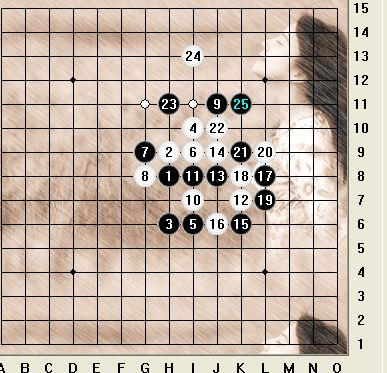
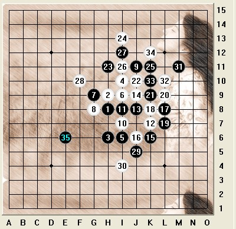
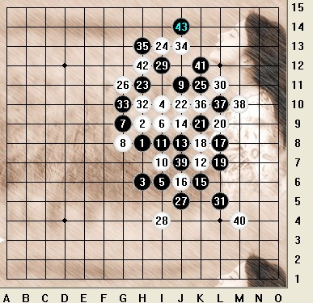
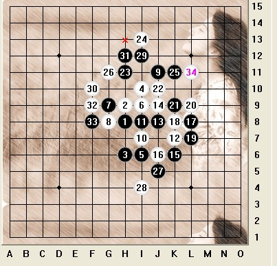
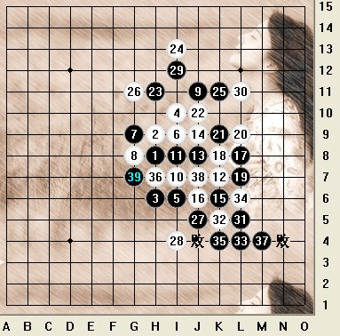
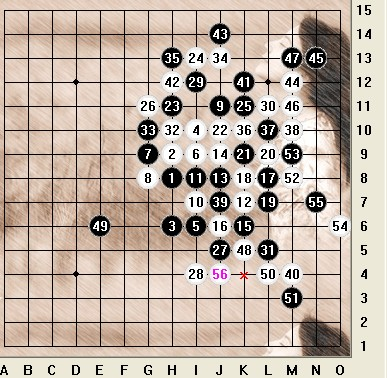
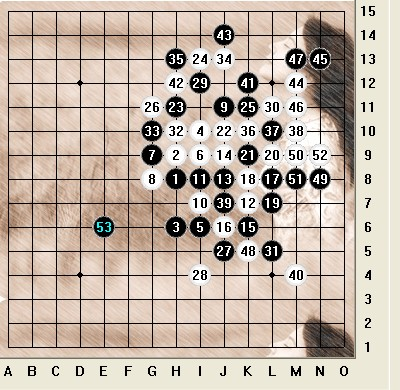

浦江水拍云崖暖 上海棋王剑芒寒
#1 浦江水拍云崖暖 上海棋王剑芒寒作者：茗弈小刀 发表时间：2009-3-4 16:40:56
爆竹声声辞旧岁，欢天喜地迎新春。2009牛年初的上海，微风吹拂着，外滩碧波荡漾着，古滇茶坊里棋盘两端，2位身穿红衣的青年对峙着。这是09年上海棋王赛的最后一盘角逐。这里要介绍下挑战者： 黄宇峰 六段 2005年起接触现代五子棋，上海第四代棋手。勤奋刻苦，善于思考，思路缜密，棋风尚攻，有一定的布局思路，中盘攻防技巧较好。黄宇峰曾获上海山口规则试验赛冠军 等多次奖项。2006-2007短短一年从初段晋升6段！看来是个天才的人物！
经过前三回合的较量上届上海棋王顾炜8段与上海连珠新锐黄宇峰6段战成平局。双方均是1胜1负1平。本局挑战者开出瑞星局其稳中求胜的心理是不难理解的，顾棋王不交换。瑞星开局前10手均为定式。黑白双方都不可随意变招。当然，10手有许多骗，不过在这种高水平的对战中，显然顾棋王不会采用。下了我认为最稳妥的12，黄老师这个13是近年来比较流行的变化，15 17 19交换定型，行棋至25都是常见的：

26手这里有2个选择：I11先冲断或在G11活斜2直接控制，但后来网络高手基本认为G11最强，更具有攻击性，没有彻底阻断23 9 25手组成的跳眠3，因为由于白的牵制，黑在右上方暂时无法直接进攻。同时，26与24形成新的活2，奠定了左上方白的优势。这样的棋必须把所有变化都参透才能确信这手棋的强大。如果26=I11,那么后边的较强变化如图：

这样虽然还是混战，但由于白棋比较分散所以黑比较好下。
回到实战中来：

27活3，局面进一步定型。29手也是挑战者研究范围内的一手，守中带攻，局面相当复杂，白如果贸然应对很容易处于被动（在位棋王顾8段本局第一次陷入长考。）如果30手不计算清楚贸然进攻,如下图：

31 33黑只要应对准确，那么白将很被动。最终还要回到L11要点防御。
所以30手顾老师权衡之后还是选择控制为主，静观其变。这时黑在上盘空间进攻的余地不大了。31手，挑战者黄老师果断的到下盘做棋。显示了强大的进攻能力和年轻棋手特有的冲击力。在盘面上和顾棋王各据上下一端，一时间杀机四伏。顾显然没想到黑会那么下，再次陷入长考（32分钟）。这里显示了顾8段不愧是老一代棋手和在位棋王，大局观和对棋的理解确实非常深刻和独到。在这种黑白大范围对峙的局面下，黑31强做棋之后，下方黑的优势已经不是一手白可以防住的，而挑战者之所以敢于这么下，白上方应该没有理论杀，那么白只有通过现在的先手交换掉黑下方的厚势，而实战的进程正说明了这一点。
如果32手直接防在K5这个点，那么将进入下图的演变，以挑战者的实力，黑取胜不难：

所以从32手白其实开始了漂亮的进攻式交换。 35唯一的解棋线路，38成双活3 ， 交换下方的目的基本达到。43这里我们看到，白棋在不知不觉中已巧妙的夺得了先手。棋王的锋芒已现，剑即将出鞘！可能是宇峰感觉到了凌厉的剑气，心中不禁一寒。 42的活3也是考验黑的一手，如反向防御则白可抓44 。 棋王继续发动攻势，行至48手 白完成了长征式的交换，表面上先手又回到了挑战者手上。不过在右边还隐藏着一套很隐蔽的冲4抓禁的手段。也许挑战者黄6段太求胜心切了，49手直接拓展做棋，大恶手！！（本来是平衡的局面，如果应对无误双方局势差不了多少，结果一方走出非常臭的一招，导致本来还没分出胜负的棋局，分出胜负。）正中顾棋王 的计策， 抓住机会冲四，抓禁 ！

哎，看来姜还是老的辣！如果这个49不要着急去拓展左边棋形，如图：

那么通过右边的交换就消磨了白右边的优势，再下这个点，就好了。
从这盘棋可以看出上海棋王顾炜强大的实力和对连珠深刻的理解。事实上，棋王虽然属于中国第一代棋手，但一直关心着五子棋技术的发展，在这里向他表示祝贺和由衷的敬佩！也祝福在顾老师的带领下，上海五子棋蒸蒸日上，新年开出更繁密更鲜艳的花朵。 看来实战中一个不小心就会导致错误判断，在这里我们愿黄宇峰老师牛年
#2 Re:浦江水拍云崖暖 上海棋王剑芒寒作者：南京小飞机 发表时间：2009-3-4 16:42:53
哈哈，第一个进来 先留言在慢慢看
#3 Re:浦江水拍云崖暖 上海棋王剑芒寒作者：闫荣辉 发表时间：2009-3-4 16:44:53
板凳！哈哈！听着音乐慢慢看完！
回来评一下：这个变化姐姐这么一讲明白了好多！两位老师的对局水平很高，很值得借鉴学习！
#4 Re:浦江水拍云崖暖 上海棋王剑芒寒作者：弱小的无尾猫 发表时间：2009-3-4 16:53:11
很有收藏和研究价值——顶：）
#5 Re:浦江水拍云崖暖 上海棋王剑芒寒作者：雅典娜 发表时间：2009-3-4 16:55:01
师傅:天才评说家吆!#6 Re:浦江水拍云崖暖 上海棋王剑芒寒作者：茗奕的飞猪 发表时间：2009-3-4 17:01:06
刀刀的棋评写得太好了！！！学到好多东西，谢谢刀刀了啊
文字也很美
#7 Re:浦江水拍云崖暖 上海棋王剑芒寒作者：飞哥 发表时间：2009-3-4 17:14:41
谢谢刀刀生动的棋评，还有分析，收获很大。
#8 Re:浦江水拍云崖暖 上海棋王剑芒寒作者：木木夕 发表时间：2009-3-4 17:21:20
刀刀文笔好棒！听着音乐看评棋，在准备杯上好的龙井茶更好啦
#9 Re:浦江水拍云崖暖 上海棋王剑芒寒作者：中大五子风 发表时间：2009-3-4 17:35:57
写得太好了，姐姐你真厉害啊！
#10 Re:浦江水拍云崖暖 上海棋王剑芒寒作者：梦醉南天 发表时间：2009-3-4 17:36:33
来晚了，呵呵，收获颇丰，谢谢师傅#11 Re:浦江水拍云崖暖 上海棋王剑芒寒作者：永不放弃 发表时间：2009-3-4 17:39:16
呵呵，师傅的棋评很好，看了师傅对两位老师的讲解，我更加的巩固了对瑞星的变化了。顶一下哈！！#12 Re:浦江水拍云崖暖 上海棋王剑芒寒作者：五子痴 发表时间：2009-3-4 17:52:45
辛苦了 支持下#13 Re:浦江水拍云崖暖 上海棋王剑芒寒作者：茗弈淡然 发表时间：2009-3-4 18:02:22
真是有心人,讲解的这么详细,支持一下.#14 Re:浦江水拍云崖暖 上海棋王剑芒寒作者：二十七刀 发表时间：2009-3-4 18:09:58
 ding 顶顶,太好了,OK太棒了,非常的好,
ding 顶顶,太好了,OK太棒了,非常的好,#15 Re:浦江水拍云崖暖 上海棋王剑芒寒作者：龙腾 发表时间：2009-3-4 18:24:58
师傅 我慢慢看挖#16 Re:浦江水拍云崖暖 上海棋王剑芒寒作者：坏蛋色色色 发表时间：2009-3-4 18:31:40
刀姐，我只能说你是天才，哎，你太完美了，不知道说啥了。#17 Re:浦江水拍云崖暖 上海棋王剑芒寒作者：小枫叶 发表时间：2009-3-4 18:33:01
小刀的棋评很强，文字也很优美。看棋评明白了一些，不然是看不懂的，多谢谢了，支持你！#18 Re:浦江水拍云崖暖 上海棋王剑芒寒作者：龙腾 发表时间：2009-3-4 18:35:16
#19 Re:浦江水拍云崖暖 上海棋王剑芒寒作者：山巅一士 发表时间：2009-3-4 18:45:50
先顶一下,再研究!感谢小刀的付出
［本站用户 茗弈小刀 于 2009-3-4 18:58:32 花5个金币送您鲜花一朵］
#20 Re:浦江水拍云崖暖 上海棋王剑芒寒作者：举步回眸浅浅笑 发表时间：2009-3-4 19:23:33
希望常看到类似这样的棋评，受益非浅。
#21 Re:浦江水拍云崖暖 上海棋王剑芒寒作者：17号蓝星仔 发表时间：2009-3-4 19:26:01
支持一下。。。#22 Re:浦江水拍云崖暖 上海棋王剑芒寒作者：高星 发表时间：2009-3-4 19:40:59
姐姐写得真好不过要能给偶们上课就更好了#23 Re:浦江水拍云崖暖 上海棋王剑芒寒作者：慕 发表时间：2009-3-4 21:15:54
姐姐真厉害！偶像
［本站用户 茗弈小刀 于 2009-3-4 21:19:59 花5个金币送您鲜花一朵］
#24 Re:浦江水拍云崖暖 上海棋王剑芒寒作者：坏蛋色色色 发表时间：2009-3-4 21:29:52
刀姐什么时候教我下棋评吧。
#25 Re:浦江水拍云崖暖 上海棋王剑芒寒作者：nara 发表时间：2009-3-4 21:30:56
刀刀又写新文章了，来支持了啊！
#26 Re:浦江水拍云崖暖 上海棋王剑芒寒作者：梦在哪 发表时间：2009-3-4 21:46:45
亲爱D~~俺来看你写的评棋了，一个字“棒”#27 Re:浦江水拍云崖暖 上海棋王剑芒寒作者：一天 发表时间：2009-3-5 0:04:09
好 顶#28 Re:浦江水拍云崖暖 上海棋王剑芒寒作者：≈★真心★≈ 发表时间：2009-3-5 0:58:27
好多人送花了哟#29 Re:浦江水拍云崖暖 上海棋王剑芒寒作者：飞哥 发表时间：2009-3-5 10:10:03
2006-2007短短一年从初段晋升6段！真不可思意。#30 Re:浦江水拍云崖暖 上海棋王剑芒寒作者：雅典娜 发表时间：2009-3-5 10:32:56
师傅的文笔一出,必属精品!#31 Re:浦江水拍云崖暖 上海棋王剑芒寒作者：木木夕 发表时间：2009-3-5 10:47:16
去持刀刀，顶下#32 Re:浦江水拍云崖暖 上海棋王剑芒寒作者：淡月疏星 发表时间：2009-3-5 10:48:08
姐姐我来晚了，文章很好，相信大家都能学到很多东西，谢谢姐姐与大家分享。#33 Re:浦江水拍云崖暖 上海棋王剑芒寒作者：木木夕 发表时间：2009-3-5 10:48:34
晕哦，打错字了，支持刀刀~~#34 Re:浦江水拍云崖暖 上海棋王剑芒寒作者：不知 发表时间：2009-3-5 10:49:34
老棋手对新变化也很熟悉啊..感谢JJ对这盘棋的精彩解说#35 Re:浦江水拍云崖暖 上海棋王剑芒寒作者：梦在哪 发表时间：2009-3-5 10:55:29
支持你，顶下#36 Re:浦江水拍云崖暖 上海棋王剑芒寒作者：坏蛋色色色 发表时间：2009-3-5 11:01:12
姐姐手捧这么多花累不，我帮你拿点吧#37 Re:浦江水拍云崖暖 上海棋王剑芒寒作者：雅典娜 发表时间：2009-3-5 11:12:48
小刀出品,必属精品!#38 Re:浦江水拍云崖暖 上海棋王剑芒寒作者：飞哥 发表时间：2009-3-5 14:46:08
我也想写一篇，架不起势，还是刀刀能写。#39 Re:浦江水拍云崖暖 上海棋王剑芒寒作者：lijeki 发表时间：2009-3-5 15:57:29
优雅的文字，看着舒服#40 Re:浦江水拍云崖暖 上海棋王剑芒寒作者：木木夕 发表时间：2009-3-5 22:40:29
小刀出品,必属精品!［本站用户 南京小飞机 于 2009-3-5 22:54:26 花15个金币砸了你1个臭鸡蛋]
#41 Re:浦江水拍云崖暖 上海棋王剑芒寒作者：南京小飞机 发表时间：2009-3-5 22:53:52
楼上的，这是我第一个说的吧 
小刀出品，必出精品
［本站用户 红豆 于 2009-3-6 11:00:23 花5个金币送您鲜花一朵］
#42 Re:浦江水拍云崖暖 上海棋王剑芒寒作者：罗马王子 发表时间：2009-3-5 23:24:05
这个变化不错，回头研究一下。#43 Re:浦江水拍云崖暖 上海棋王剑芒寒作者：飞哥 发表时间：2009-3-6 10:27:03
小刀出品，必出精品
#44 Re:浦江水拍云崖暖 上海棋王剑芒寒作者：老黄 发表时间：2009-3-6 10:44:59
高手的对局当然要高手来评才有味道
支持
#45 Re:浦江水拍云崖暖 上海棋王剑芒寒作者：二十七刀 发表时间：2009-3-6 10:47:16
写的真棒,太OK了,神了,这是我见过最好的五子棋类文章#46 Re:浦江水拍云崖暖 上海棋王剑芒寒作者：海湾浪琴 发表时间：2009-3-6 10:48:52
干妈，你好厉害啊！［本站用户 茗弈小刀 于 2009-3-6 11:02:29 花5个金币送您鲜花一朵］
#47 Re:浦江水拍云崖暖 上海棋王剑芒寒作者：茗弈淡然 发表时间：2009-3-6 10:52:15
精彩,支持一下#48 Re:浦江水拍云崖暖 上海棋王剑芒寒作者：妙玉偷星 发表时间：2009-3-6 10:54:08
一直在思考如何把子作为自己思维的一部分，可是到现在都不得而入，何以为子，子的用处为何，下每一子的目的为何，究竟要达到什么样的局面，一直都在想 希望能有好的结果
#49 Re:浦江水拍云崖暖 上海棋王剑芒寒作者：红豆 发表时间：2009-3-6 10:59:37
支持下#50 Re:浦江水拍云崖暖 上海棋王剑芒寒作者：茗弈雯 发表时间：2009-3-6 11:09:50
小刀 见解独到 分析细致#51 Re:浦江水拍云崖暖 上海棋王剑芒寒作者：茗弈雯 发表时间：2009-3-6 11:13:35
师傅 看了你的解说 感想很多 我们永远支持你 你是最棒的#52 Re:浦江水拍云崖暖 上海棋王剑芒寒作者：茗弈出埃及记 发表时间：2009-3-6 11:22:17
这个13--25手的局面之后我怎么都不会下。觉得无论用黑还是白都找不到好点。。所以一直以为这个局不是好变化。
看了这个帖子才发现，其实还是我理解的少啊。。
棋评写的真好。。。
#53 Re:浦江水拍云崖暖 上海棋王剑芒寒作者：弱小的无尾猫 发表时间：2009-3-6 13:24:05
珍贵的评棋！最难得的是将对局者的心理变化分析的相当清晰，值得细细推敲：）
#54 Re:浦江水拍云崖暖 上海棋王剑芒寒作者：琦玉 发表时间：2009-3-6 15:31:34
好不容易可以发言了，只有5块大洋，先送朵花给你吧，文章写的很好［本站用户 茗弈小刀 于 2009-3-6 18:11:26 花5个金币送您鲜花一朵］
#55 Re:浦江水拍云崖暖 上海棋王剑芒寒作者：左伟光 发表时间：2009-3-6 17:56:56
写的很好啊 ，顶到起#56 Re:浦江水拍云崖暖 上海棋王剑芒寒作者：雅典娜 发表时间：2009-3-7 8:51:21
师傅的文章,形象生动,太棒了!#57 Re:浦江水拍云崖暖 上海棋王剑芒寒作者：小枫叶 发表时间：2009-3-7 9:40:25
棋评写得好棒哟，以后要常写哎，让我们多学习学习！
#58 Re:浦江水拍云崖暖 上海棋王剑芒寒作者：刀魂 发表时间：2009-3-7 11:10:41
小刀师姐，对连珠的热爱，那不叫热爱，应该说是相当的热爱。。。佩服师姐您的执着。干好一件事情其实有时候很难，贵在执着与坚持［本站用户 茗弈小刀 于 2009-3-7 11:18:59 花5个金币送您鲜花一朵］
#59 Re:浦江水拍云崖暖 上海棋王剑芒寒作者：飞哥 发表时间：2009-3-7 11:22:53
以后要跟刀刀学写棋评了。#60 Re:浦江水拍云崖暖 上海棋王剑芒寒作者：淡月疏星 发表时间：2009-3-7 14:12:12
本来想多送姐姐点花的，但我的金币不多。#61 Re:浦江水拍云崖暖 上海棋王剑芒寒作者：战龙在野 发表时间：2009-3-8 19:50:05
写的不错，但是没有把这个32的黑胜正解手段写出来，感觉略有不足
［本站用户 茗弈小刀 于 2009-3-8 22:19:03 花5个金币送您鲜花一朵］
#62 Re:浦江水拍云崖暖 上海棋王剑芒寒作者：行云流水 发表时间：2009-3-8 20:11:37
实战32以后是黑胜？我不知道，呵呵，愿闻其详，请教了。#63 Re:浦江水拍云崖暖 上海棋王剑芒寒作者：战龙在野 发表时间：2009-3-8 21:07:06
说错了。。是35后面有个白必胜。。。汗#64 Re:浦江水拍云崖暖 上海棋王剑芒寒作者：行云流水 发表时间：2009-3-8 22:25:51
咯咯。这个就沉默中了。#65 Re:浦江水拍云崖暖 上海棋王剑芒寒作者：战龙在野 发表时间：2009-3-8 22:50:24
=======上图对应的爱五子棋谱代码如下，以便你拆解：========
h8h9h6i10i6i9g9g8j11i7i8k7j8j9k6j6l8k8l7l9k9j10h11i13k11g11j5i4i12l11l5h10g10j13h13k10l10m10j7m4k12j14
======================================================
我的意思是这个。。。不过我没仔细看。。我做事情比较马虎。。。
#66 Re:浦江水拍云崖暖 上海棋王剑芒寒作者：坏蛋色色色 发表时间：2009-3-9 10:15:33
战龙研究得好深下次你和刀姐姐一起写棋评吧 那就锦上添花了。
那就锦上添花了。
［本站用户 淡月疏星 于 2009-3-9 17:59:08 花5个金币送您鲜花一朵］
#67 Re:浦江水拍云崖暖 上海棋王剑芒寒作者：五子痴 发表时间：2009-3-9 12:15:22
=======上图对应的爱五子棋谱代码如下，以便你拆解：========
h8h9h6i10i6i9g9g8j11i7i8k7j8j9k6j6l8k8l7l9k9j10h11i13k11g11j5i4i12l11l5h10g10j13h13k10l10m10j7m4n9m8m12
======================================================
35之后貌似白也胜不了 老龙前辈真的马虎了 41可以跳4
#68 Re:浦江水拍云崖暖 上海棋王剑芒寒作者：淡月疏星 发表时间：2009-3-9 17:57:50
呵呵，实战毕竟时间有限，想不了那么细致。#69 Re:浦江水拍云崖暖 上海棋王剑芒寒作者：琦玉 发表时间：2009-3-9 22:07:32
感动
#70 Re:浦江水拍云崖暖 上海棋王剑芒寒作者：梦在哪 发表时间：2009-3-10 10:31:29
喜欢这样的棋评，能学到很多哦东西，谢谢小刀老师，期待以后能多看到这样的棋评。#71 Re:浦江水拍云崖暖 上海棋王剑芒寒作者：茗奕的飞猪 发表时间：2009-3-10 19:32:10
谢谢刀刀与大家分享！
#72 Re:浦江水拍云崖暖 上海棋王剑芒寒作者：安娜制作所 发表时间：2009-3-11 8:27:02
师傅：把顾老师的风采绘制的淋漓尽致！#73 Re:浦江水拍云崖暖 上海棋王剑芒寒作者：左伟光 发表时间：2009-3-11 13:57:57
小刀老师写的太好了，谢谢，学到很多东西。#74 Re:浦江水拍云崖暖 上海棋王剑芒寒作者：坏蛋色色色 发表时间：2009-3-11 14:16:33
我也学到很多东西，谢谢姐姐，希望以后多看到你的棋评。。。。。。。。。。。。。。。。。。。。。。。。。。#75 Re:浦江水拍云崖暖 上海棋王剑芒寒作者：安娜制作所 发表时间：2009-3-12 11:29:00
更多精品,期待中!#76 Re:浦江水拍云崖暖 上海棋王剑芒寒作者：木木夕 发表时间：2009-3-12 19:19:23
更多精品,期待中!再写一篇吧。
#77 Re:浦江水拍云崖暖 上海棋王剑芒寒作者：海湾浪琴 发表时间：2009-3-12 19:44:28
干妈好，我来看你的文章了，我是你的轩儿。#78 Re:浦江水拍云崖暖 上海棋王剑芒寒作者：独爱五子连珠 发表时间：2009-3-13 7:49:29
支持刀刀，顶
#79 Re:浦江水拍云崖暖 上海棋王剑芒寒作者：飞哥 发表时间：2009-3-13 11:05:53
顾棋王的风采领略了，果然有行云流水的气质！#80 Re:浦江水拍云崖暖 上海棋王剑芒寒作者：飞哥 发表时间：2009-3-14 10:56:03
77楼的就是8岁罗罗吧？昨晚的助教？#81 Re:浦江水拍云崖暖 上海棋王剑芒寒作者：木木夕 发表时间：2009-3-14 20:43:54
刀姐写的东西就是棒～#82 Re:浦江水拍云崖暖 上海棋王剑芒寒作者：坏蛋色色色 发表时间：2009-3-14 22:51:18
赞同楼上的！ 好东西就要顶起！
好东西就要顶起！#83 Re:浦江水拍云崖暖 上海棋王剑芒寒作者：木木夕 发表时间：2009-3-15 11:42:35
顶起！支持小刀老师！#84 Re:浦江水拍云崖暖 上海棋王剑芒寒作者：海湾浪琴 发表时间：2009-3-15 13:42:51
干妈好，谢谢干妈教我下棋。这次我要取得好名次来成都请干妈吃饭。#85 Re:浦江水拍云崖暖 上海棋王剑芒寒作者：一个人流浪 发表时间：2009-3-15 18:49:46
顶起，支持小刀#86 Re:浦江水拍云崖暖 上海棋王剑芒寒作者：淡月疏星 发表时间：2009-3-15 21:45:58
期待更多精品。。。#87 Re:浦江水拍云崖暖 上海棋王剑芒寒作者：安娜制作所 发表时间：2009-3-16 9:32:55
精品没有终点！#88 Re:浦江水拍云崖暖 上海棋王剑芒寒作者：独爱五子连珠 发表时间：2009-3-16 19:11:06
小刀出品，必是精品！这话说的太确切了！#89 Re:浦江水拍云崖暖 上海棋王剑芒寒作者：安娜制作所 发表时间：2009-3-17 10:53:37
好文章,顶不需要理由~!#90 Re:浦江水拍云崖暖 上海棋王剑芒寒作者：茗弈真实的谎言 发表时间：2009-3-17 11:06:07
好！顶起！#91 Re:浦江水拍云崖暖 上海棋王剑芒寒作者：飞哥 发表时间：2009-3-17 15:03:44
才女写的东西就是不一般！#92 Re:浦江水拍云崖暖 上海棋王剑芒寒作者：木木夕 发表时间：2009-3-17 21:17:06
偶像！#93 Re:浦江水拍云崖暖 上海棋王剑芒寒作者：妙玉偷星 发表时间：2009-3-18 12:18:28
师傅太厉害了！#94 Re:浦江水拍云崖暖 上海棋王剑芒寒作者：飞哥 发表时间：2009-3-18 13:44:47
才知道你师傅厉害吗？#95 Re:浦江水拍云崖暖 上海棋王剑芒寒作者：茗弈真实的谎言 发表时间：2009-3-18 22:45:05
永远跟着刀子的脚步走！#96 Re:浦江水拍云崖暖 上海棋王剑芒寒作者：飞哥 发表时间：2009-3-19 10:12:38
很好很强大！#97 Re:浦江水拍云崖暖 上海棋王剑芒寒作者：独爱五子连珠 发表时间：2009-3-20 9:21:04
谢谢，学习了#98 Re:浦江水拍云崖暖 上海棋王剑芒寒作者：茗弈真实的谎言 发表时间：2009-3-20 13:17:24
亲爱的刀，你是集智慧与柔情一体的女孩，无法形容对你的欣赏与喜爱。愿意这么一直守候你，到天荒到地老。#99 Re:浦江水拍云崖暖 上海棋王剑芒寒作者：红舞鞋 发表时间：2009-3-20 14:40:13
写得太好了，你真厉害啊！#100 Re:浦江水拍云崖暖 上海棋王剑芒寒作者：木木夕 发表时间：2009-3-21 17:01:59
好文章大家都喜欢！#101 Re:浦江水拍云崖暖 上海棋王剑芒寒作者：习惯下棋的时候抽烟 发表时间：2009-3-21 20:02:24
哇塞！还是才女！写得好这篇棋评！#102 Re:浦江水拍云崖暖 上海棋王剑芒寒作者：岳麓小棋后 发表时间：2009-3-22 13:34:18
呵,现在才来回,有空跟姐姐学棋评,,讲棋也是蛮好玩的吧,讲出后续变化应该是每个棋手向往的境界呵,学习#103 Re:浦江水拍云崖暖 上海棋王剑芒寒作者：丑小鸭 发表时间：2009-3-22 19:43:35
偶像！我喜欢看您写的文章，也想跟着老师您学棋！#104 Re:浦江水拍云崖暖 上海棋王剑芒寒作者：一个人流浪 发表时间：2009-3-22 19:54:01
喜欢刀刀的一切！！！！#105 Re:浦江水拍云崖暖 上海棋王剑芒寒作者：坏蛋色色色 发表时间：2009-3-23 10:19:37
喜欢姐姐！顶起！！！！！！！！！！#106 Re:浦江水拍云崖暖 上海棋王剑芒寒作者：淡月疏星 发表时间：2009-3-24 9:52:02
姐姐太辛苦了，管理社里大小事，还能写出这么好的棋评给大家欣赏和学习，你是我佩服的人！#107 Re:浦江水拍云崖暖 上海棋王剑芒寒作者：妙玉偷星 发表时间：2009-3-24 20:01:31
师傅的文章百看不厌。#108 Re:浦江水拍云崖暖 上海棋王剑芒寒作者：雨还在下 发表时间：2009-3-24 20:23:17
好文章谁都喜欢看#109 Re:浦江水拍云崖暖 上海棋王剑芒寒作者：海湾浪琴 发表时间：2009-3-26 10:18:43
干妈，我5月份要去比赛了，有点害怕，你能陪着我去吗？#110 Re:浦江水拍云崖暖 上海棋王剑芒寒作者：雅典娜 发表时间：2009-3-26 17:00:39
多看看,干妈的好文章8,这篇就不错!#111 Re:Re:浦江水拍云崖暖 上海棋王剑芒寒作者：冰清 发表时间：2009-3-27 18:57:36
棋评写得不错，学到很多，支持#112 Re:Re:浦江水拍云崖暖 上海棋王剑芒寒作者：静待花开 发表时间：2009-3-31 7:42:31
刀刀才女写得这么棒 奖励亲下~~`
奖励亲下~~`#113 Re:Re:浦江水拍云崖暖 上海棋王剑芒寒作者：吃大米饭的鱼 发表时间：2009-4-1 12:09:44
喜欢刀刀的文笔，支持#114 Re:浦江水拍云崖暖 上海棋王剑芒寒作者：茗弈真实的谎言 发表时间：2009-4-2 9:57:40
刀才女的杰作必须顶！#115 Re:Re:浦江水拍云崖暖 上海棋王剑芒寒作者：淡月疏星 发表时间：2009-4-2 13:09:22
引用：姐姐真棒！
原文由 茗弈真实的谎言 发表于 2009-4-2 9:57:40 :
刀才女的杰作必须顶！
#116 Re:浦江水拍云崖暖 上海棋王剑芒寒作者：坏蛋色色色 发表时间：2009-4-2 14:34:29
 姐姐永远是最棒的！
姐姐永远是最棒的！#117 Re:浦江水拍云崖暖 上海棋王剑芒寒作者：木木夕 发表时间：2009-4-3 9:17:40
真好写得，学习了！#118 Re:浦江水拍云崖暖 上海棋王剑芒寒作者：天逸乄西西 发表时间：2009-4-3 23:49:06
请作者加群:27122239
(加群时请说明是参赛者,谢谢)
爱五子棋网-原创文学活动宣
2009年4月3日
#119 Re:浦江水拍云崖暖 上海棋王剑芒寒作者：飞哥 发表时间：2009-4-4 9:30:15
刀，在我眼里你永远是最棒的！#120 Re:浦江水拍云崖暖 上海棋王剑芒寒作者：茗弈真实的谎言 发表时间：2009-4-4 20:31:34
很喜欢这篇棋品！#121 Re:Re:浦江水拍云崖暖 上海棋王剑芒寒作者：拽 发表时间：2009-4-5 21:40:47
你的忠实粉丝#122 Re:Re:浦江水拍云崖暖 上海棋王剑芒寒作者：没事摆石子玩 发表时间：2009-4-8 20:04:03
棋评写得很棒，学习了#123 Re:浦江水拍云崖暖 上海棋王剑芒寒作者：习惯下棋的时候抽烟 发表时间：2009-4-10 13:30:07
刀，喜欢你的棋，你的伤，你的笑。。。。。。。。。#124 Re:浦江水拍云崖暖 上海棋王剑芒寒作者：茗弈小刀 发表时间：2009-4-10 14:36:01
#125 Re:浦江水拍云崖暖 上海棋王剑芒寒作者：菜包先生 发表时间：2009-4-10 14:40:51
噶噶，老姐我来了！写的真好啊！下次帮我写一个吧
#126 Re:浦江水拍云崖暖 上海棋王剑芒寒作者：坏蛋色色色 发表时间：2009-4-10 15:12:38
 123楼的！不准追求我姐！
123楼的！不准追求我姐！#127 Re:浦江水拍云崖暖 上海棋王剑芒寒作者：丑小鸭 发表时间：2009-4-10 16:54:08
小刀LS这么美，棋好人好谁8稀饭呢。#128 Re:浦江水拍云崖暖 上海棋王剑芒寒作者：梦在哪 发表时间：2009-4-10 22:54:23
嘿，我也喜欢小刀老师的文章。#129 Re:浦江水拍云崖暖 上海棋王剑芒寒作者：醉了 发表时间：2009-4-11 11:37:48
人美，文更美！#130 Re:浦江水拍云崖暖 上海棋王剑芒寒作者：一个人流浪 发表时间：2009-4-11 11:48:40
小刀老师文笔真好，学习了。#131 Re:浦江水拍云崖暖 上海棋王剑芒寒作者：琦玉 发表时间：2009-4-11 13:38:49
刀刀是偶滴，都表争！#132 Re:浦江水拍云崖暖 上海棋王剑芒寒作者：丌同 发表时间：2010-9-17 15:11:36
时间长不下棋了，收藏起来研究下#133 Re:浦江水拍云崖暖 上海棋王剑芒寒作者：賢周 发表时间：2010-9-26 21:34:18
=======上图对应的爱五子棋谱代码如下，以便你拆解：========
h8h9h6i10i6i9g9g8j11i7i8k7j8j9k6j6l8k8l7l9k9j10h11i13k11g11j5i4i12l11l5h10g10j13h13k10l10m10j7m4n9m8m12f10h12f9f8f7e6h4
======================================================
#134 Re:浦江水拍云崖暖 上海棋王剑芒寒作者：岑小鱼 发表时间：2010-10-22 19:36:02
这个变化太激烈了 很少这么走 先保存起来